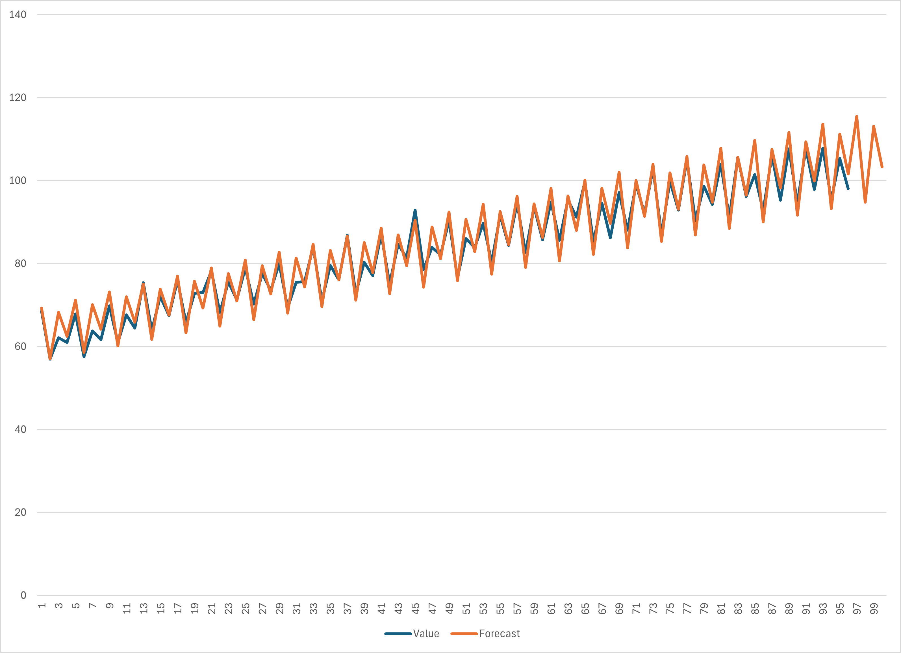

Exponential Smoothing
Exponential smoothing adalah metode peramalan yang memperhitungkan bobot yang berkurang secara eksponensial terhadap data masa lalu. Metode ini sangat cocok untuk data yang tidak memiliki pola musiman dan tren. Metode ini memiliki dua parameter, yaitu alpha dan beta. Alpha adalah parameter yang menentukan bobot yang diberikan pada data masa lalu, sedangkan beta adalah parameter yang menentukan bobot yang diberikan pada data peramalan.
Implementasi di Ms Excel
Gunakan template berikut sebagain demonstrasi: Template.xlsx
Tentukan nilai alpha dan beta. Alpha akan digunakan sebagai rasio Value, sedangkan beta akan digunakan sebagai rasio Exponential Smoothing sebelumnya.
Pastikan bahwa alpha + beta = 1. Misalnya alpha = 0.6 dan beta = 0.4
Mulai dari baris kedua, nilai ES akan sama dengan Value dari baris pertama.
=B2
Untuk baris selanjutnya, gunakan rumus berikut:
\[ES_t = \alpha \times Value_{t-1} + (1 - \alpha) \times ES_{t-1}\]Atau di Excel (untuk ES di n ke-2) .. code-block:
=D3 * $M$11 + E3 * $M$12
Tentukan Value/ES Ratio dengan rumus berikut:
\[Value/ES Ratio = \frac{Value}{ES}\]Atau di Excel
=[@Value] / [@ES]
Dapatkan value seasonality di Seasonality Table. Di Excel, terapkan formula berikut:
=AVERAGEIF($C$3:$C$97, [@Quarter], $F$3:$F$97)Note: Gunakan vlookup untuk memasukkan data seasonality ke table utama kita untuk mengisi kolom Seasonality.
=VLOOKUP([@Quarter],$H$3:$I$7,2,FALSE)
Barulah kita bisa menentukan value data yang sudah di-deseasonalize dengan rumus berikut:
\[Seasonalized Value = Value / Seasonality\]Atau di excel
=[@Value]/[@Seasonality]
Sebelum menentukan nilai trendline, kita perlu mengetahu koefisien Intercept dan Variable dari data yang ada. Gunakan Data Analysis untuk menemukan nilai tersebut
Di tab Data, klik Data Analysis
Gunakan option regression
Untuk area input, gunakan Range A2:A97 sebagai input X dan D2:D97 sebagai input Y
Pilih Output range di area kosong (seperti di L14), lalu klik OK
Untuk menentukan nilai trendline, gunakan persamaan regression berdasarkan koefisien yang sudah ditentukan.
Ingat rumus regression
\[Y = a + bX\]dimana a adalah koefisien intercept dan b adalah koefisien variable. Sedangkan X adalah nilai yang akan dihitung (di kondisi ini adalah n)
Untuk forecast, kita bisa menggunakan rumus berikut:
\[Forecast = Trendline \times Seasonality\]
Jika semuanya sudah diisi dengan teliti, jika kita membuat grafik untuk mengetahui hubungan n terhadap Value dan forecast, kita akan mendapatkan hasil seperti berikut:
{kind=link}
Note
Perhatikan di garis forecast, kita dapat membuat suatu prediksi nilai apa yang akan terjadi di masa depan. Hal itu dikarenakan kita menyimpan suatu trend berdasarkan seasonality tertentu (di kondisi ini adalah per quartal). Dengan demikian, kita bisa memprediksi nilai apa yang akan terjadi di masa depan berdasarkan trend yang sudah kita tentukan.